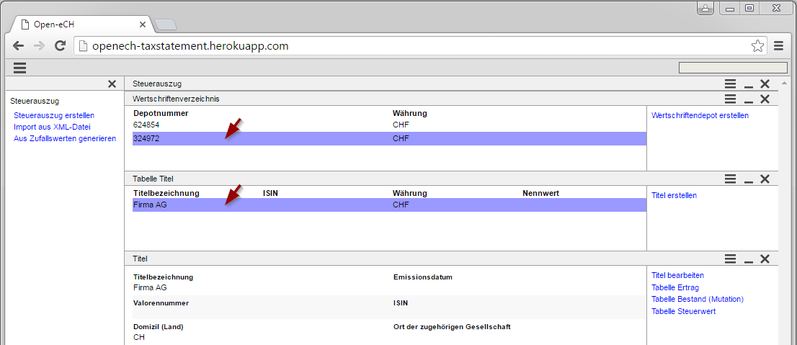

Mit dieser Applikation können Dokumente gemäss der Spezifikation eCH 0196 visualisiert, erstellt oder bearbeitet werden. Sie ist als Hilfe gedacht bei der Arbeit mit den entsprechenden XML-Dateien.
Ein Steuerauszug kann aus einem bestehenden XML-File gelesen werden oder neu über die Applikation erstellt werden. Zusätzlich kann zu Versuchszwecken ein Steuerauszug komplett aus zufälligen Daten generiert werden.
In der Grafik ist der Ablauf dargestellt. Ein Steuerauszug wird importiert oder erstellt und dann bearbeitet. Anschliessend kann wieder ein Export nach XML gemacht werden. Die Daten werden nicht dauerhaft auf dem Server gespeichert. Bei einem erneuten Aufruf der Applikation kann nicht darauf zurückgegriffen werden. Ist dies gewünscht sollten die Daten über einen XML-Export auf einen lokalen Datenträger gespeichert werden.
In der linken Seite des Browser befindet sich das Navigationsmenu. Es kann über das Kreuz in ihrer Titelleiste geschlossen werden. Über das Symbol der drei Linien oben links kann es bei Bedarf wieder angezeigt werden. Das Menu kann jederzeit benutzt werden ausser es ist gerade ein Dialog geöffnet.
Wie gewohnt kann zudem mit den Vor- und Zurück Knöpfen des Browser im Verlauf geblättert werden.
Die Navigation am linken Rand stellt den Einstiegspunkt für eine neue Bearbeitung dar. Es kann dabei auf drei Arten ein neuer Auszug erstellt werden:
Sämtliche Eingaben finden in einem Dialog Fenster statt. Dabei werden Felder mit noch nicht gültigem Inhalt markiert. Solange solche Felder existieren kann ein Dialog nicht geschlossen werden.
Mit "Demodaten" können die Felder mit zufälligen Werten gefüllt werden, sodass ein Abspeichern mit "Ok" möglich wird. Dies ist hilfreich, wenn man sich nur mit dem Tool vertraut machen will.
Nach dem erstellen eines Auszugs werden im mittleren Bereich die Daten angezeigt. Diese Hauptsicht kann weitere Details zur Verfügung stellen. Diese sind über das Kontextmenu rechts erreichbar.
Das Kontextmenu ist zu Beginn sichtbar. Es kann mit den drei Linien auf der rechten oberen Seite ein- und ausgeblendet werden. Zusätzlich kann die Steuerung auch über die rechte Maustaste erfolgen. Hinweis: Sind mehrere Details gleichzeitig untereinander angezeigt wird durch die rechte Maustaste jeweils das Kontextmenu gesteuert in dem sich der Mauszeiger gerade befindet. Besitzt eine Ansicht kein Kontextmenu (erkenntlich daran dass die drei Linien in deren Kopfzeile fehlen) bewirkt die rechte Maustaste nichts.

Bei Tabellen von Einträgen kann durch ein Doppelklick auf einen Eintrag die Detailsicht zu diesem Eintrag aktiviert werden. Diese wird unterhalb der Tabelle angezeigt. Wird danach die Auswahl in der Tabelle geändert, so wird jeweils diese Auswahl unten angezeigt. Dieser Mechanismus funktioniert auch über mehrere Stufen von Details.
Wird eine Ansicht geschlossen, so werden alle Ansichten unterhalb dieser Ansicht ebenfalls geschlossen.
Durch die Mehrstufigkeit der Ansichten kann die gesamte Anzeige vertikal sehr lang werden. Zur Übersichtlichkeit können einzelne Ansichten zusammengeklappt werden.
Der Source Code dieser Applikation ist abgelegt auf github.
Sofern nicht anders vereinbart unterliegt diese Applikation der AGPL.
Bitte beachten Sie dass diese Applikation auf eigene Gefahr verwendet wird. Es wird keine Garantie für die Sicherheit eingegebener Daten gegeben. Bitte verweden Sie keine echten Personen, Firmen oder Auszüge.
Diese Applikation verwendet die Standards von eCH. eCH ist jedoch nicht für diese Applikation verantwortich.
Für Auskünfte oder Anmerkungen zu dieser Applikation wenden Sie sich an mail@openech.ch.